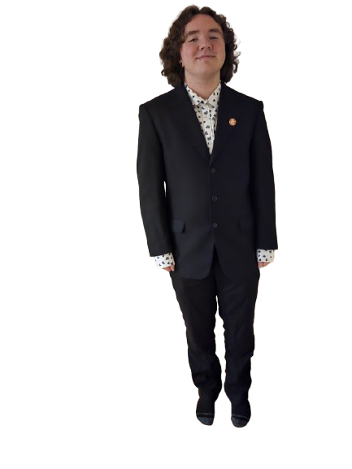

About

Adrian Popowich
Production Designer
Adrian Popowich is a filmmaker from Kamloops, BC. He has a year of experience in the production design department, as well as 4 years of tradition art education, honing his skills in painting and sculpture.